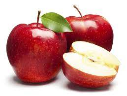

Semua buah yang tersedia di sini adalah hasil panen dari petani dalam negri , dan di proses dengan sedemikian rupa sehinggga menghasilkan sebuah produk yang berkualitas untuk keluarga Indonesia wkwkwkwk :)

Apel adalah jenis buah-buahan, atau buah yang dihasilkan dari pohon buah apel. Buah apel biasanya berwarna merah kulitnya jika masak dan, namun bisa juga kulitnya berwarna hijau atau kuning. Kulit buahnya agak lembek dan daging buahnya keras. Buah ini memiliki beberapa biji di dalamnya. ________________________
Anggur merupakan tanaman buah berupa perdu merambat yang termasuk ke dalam keluarga Vitaceae. Buah ini biasanya digunakan untuk membuat jus anggur, jelly, minuman anggur, minyak biji anggur dan kismis, atau dimakan langsung. ________________________
Jeruk atau limau adalah semua tumbuhan berbunga anggota marga Citrus dari suku Rutaceae. Anggotanya berbentuk pohon dengan buah yang berdaging dengan rasa masam yang segar, meskipun banyak di antara anggotanya yang memiliki rasa ________________________